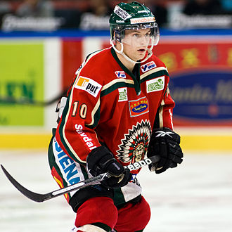
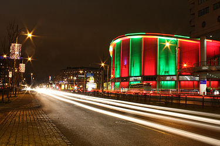

Frölunda HC, även Frölunda Indians är en ishockeyklubb från Göteborg.
Frölunda har genom åren spelat i gröna eller vita tröjor. I samband med att man började kalla sig Frölunda Indians bytte man till att spela i röda tröjor hemma och vita borta. Säsongerna 2007/2008 och 2008/2009 spelade laget i röda tröjor hemma lördagar och helgdagar och i gröna tröjor hemma på vardagar. Från och med säsongen 2009/2010 spelar Indians återigen med enbart röda tröjor på hemmaplan. Frölunda blev 2017 utsedda till Europas bästa lag, och tränare Roger Rönnberg blev korad till årets ledare.
Frölundas huvudfärg är röd.
En annan färg som Frölunda använder är grön.
Bilden ovan visar Scandinavium belyst i Frölundas färger. Tryck på bilden för att komma till Scandinaviums webbplats.